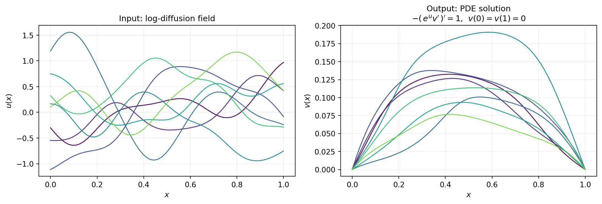
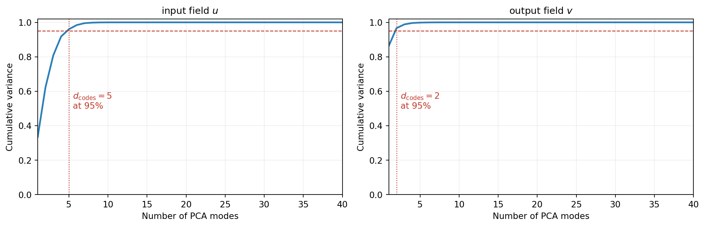
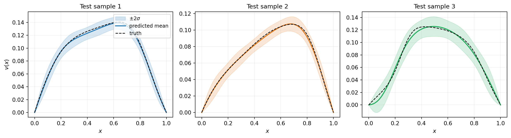
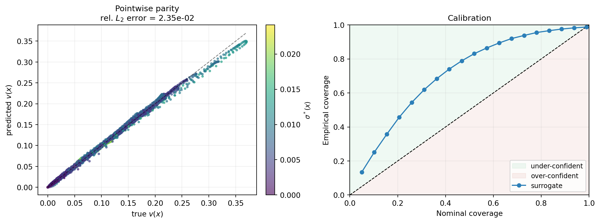
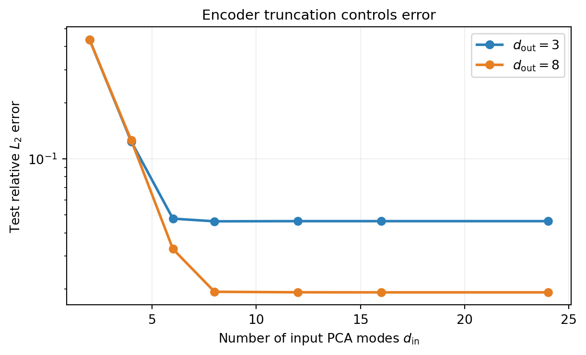
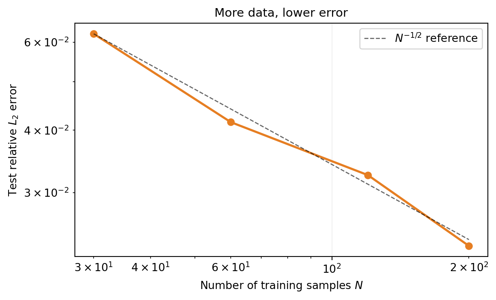

import numpy as np
import matplotlib.pyplot as plt
from pyapprox.util.backends.numpy import NumpyBkd
from pyapprox_tutorials.figures._operator_learning import (
sample_log_diffusion_field,
solve_elliptic_1d,
)
bkd = NumpyBkd()
ngrid = 64
grid = np.linspace(0.0, 1.0, ngrid)
rng_train = np.random.default_rng(0)
rng_test = np.random.default_rng(1)
u_train_np = sample_log_diffusion_field(grid, 200, rng=rng_train)
v_train_np = solve_elliptic_1d(u_train_np, grid)
u_test_np = sample_log_diffusion_field(grid, 200, rng=rng_test)
v_test_np = solve_elliptic_1d(u_test_np, grid)Kernel Operator Learning
PyApprox Tutorial Library
Build a kernel-based operator surrogate end-to-end on a 1D diffusion problem and assess its accuracy.
Learning Objectives
After completing this tutorial, you will be able to:
- Construct a
KernelOperatorSurrogatefor a function-to-function operator - Choose encoders (identity vs. PCA), a kernel, and a fitter
- Fit the surrogate by maximum likelihood and predict mean and uncertainty bands on test inputs
- Diagnose accuracy with held-out relative \(L_2\) error and calibration
- Decide how many PCA modes and training samples to use
Prerequisites
Operator Learning introduced the encode- regress-decode architecture and the 1D diffusion problem used in this tutorial. Building a Gaussian Process Surrogate covered GP regression in the scalar case; the kernel operator surrogate uses the same machinery in code space.
The Problem
We learn the operator \(\mathcal{G}^\dagger : u \mapsto v\) where \(v\) solves
\[ -\frac{d}{dx}\!\left(e^{u(x)} \frac{dv}{dx}\right) = 1 \qquad \text{on}\ [0,1], \qquad v(0) = v(1) = 0. \]
Input log-diffusion fields \(u\) are drawn from a centred Gaussian random field with squared-exponential covariance, length scale \(\ell = 0.15\) and marginal standard deviation \(\sigma = 0.6\). We generate \(N = 200\) training pairs and \(200\) held-out test pairs on a uniform grid of \(d = 64\) points.
Figure 1 shows a handful of training pairs. Notice that the output functions are much smoother than the inputs: the elliptic operator integrates twice in space, so the solution \(v\) inherits two extra degrees of differentiability beyond the diffusion field \(u\).

Choosing Encoder Dimensions via PCA
Before fitting any regressor we choose how many PCA modes to keep on the input and output sides. The cumulative variance plot tells us how many modes are needed to capture a given fraction of training-data variation.
sing_in = np.linalg.svd(
u_train_np - u_train_np.mean(axis=1, keepdims=True),
compute_uv=False,
)
sing_out = np.linalg.svd(
v_train_np - v_train_np.mean(axis=1, keepdims=True),
compute_uv=False,
)
For this problem, around 10 input modes and 5 output modes capture 95% of the training variation. We use these as a starting point, but 95% variance is a heuristic, not the final answer. The surrogate’s total error has three contributions: input encoder truncation, regression error in code space, and output decoder truncation. Cumulative variance only addresses the encoder and decoder sides individually, and says nothing about regression quality. The right criterion is held-out accuracy on the recovered output functions, which we study below.
Building the Surrogate
The KernelOperatorMaximumLikelihoodFitter ties together three components:
- Input encoder factories — one callable per input function. Each receives the training data and the backend, and returns a fitted
FunctionEncoderProtocolinstance. - Output encoder factories — analogous, one per output function.
- A scalar kernel acting on the concatenated input code space.
For a single-input, single-output operator we pass length-1 lists. A Matérn-5/2 kernel on \(\mathbb{R}^{d_{\mathrm{in}}}\) is a reasonable default; the output coordinates share the same kernel and one Cholesky factorisation via the multi-RHS shortcut covered in Kernel Operator Learning.
from pyapprox.surrogates.kernels.matern import Matern52Kernel
from pyapprox.surrogates.kerneloperator.encoders import (
PCAFunctionEncoder,
)
from pyapprox.surrogates.kerneloperator.fitters import (
KernelOperatorMaximumLikelihoodFitter,
)
def make_pca_factory(ncodes):
def factory(data, bkd):
return PCAFunctionEncoder.fit_from_data(data, bkd, ncodes=ncodes)
return factory
d_in, d_out = 10, 5
kernel = Matern52Kernel(
[1.0] * d_in, (0.05, 20.0), d_in, bkd,
)
fitter = KernelOperatorMaximumLikelihoodFitter(
bkd,
input_encoder_factories=[make_pca_factory(d_in)],
output_encoder_factories=[make_pca_factory(d_out)],
kernel=kernel,
nugget=1e-8,
)
NoteEncoder factories
We pass factories (callables) rather than fitted encoders so the fitter can fit each encoder from the training data at fit time. Pre-fitted encoders (for example loaded from a saved checkpoint) can be wrapped in a lambda that ignores its arguments and returns the encoder.
Fitting runs the same NLL-minimising optimisation used by the standalone ExactGaussianProcess, but now on the encoded codes:
u_train = [bkd.array(u_train_np)]
v_train = [bkd.array(v_train_np)]
result = fitter.fit(u_train, v_train)
surr = result.surrogate()The returned KernelOperatorOptimizedFitResult exposes the fitted surrogate and the optimisation diagnostics in the same style as the GP fitters.
Predicting and Visualising Uncertainty
Predictions take a list of input functions and return a list of output functions, each on the corresponding grid:
u_test = [bkd.array(u_test_np)]
v_pred_codes = surr.predict(u_test)
v_std_codes = surr.predict_std(u_test)
v_pred_np = bkd.to_numpy(v_pred_codes[0])
v_std_np = bkd.to_numpy(v_std_codes[0])Figure 3 shows three test samples. The predicted mean closely tracks the true PDE solution and the \(\pm 2\sigma\) band stays narrow where the model is confident.

Assessing Accuracy
Two diagnostics: a pointwise predicted-vs-true scatter, and a calibration diagram comparing nominal and empirical interval coverage.
rel_err = np.linalg.norm(v_pred_np - v_test_np) / np.linalg.norm(v_test_np)
print(f"Relative L2 error on test set: {rel_err:.3e}")
abs_err = np.abs(v_pred_np - v_test_np)
within_2sigma = float((abs_err < 2.0 * v_std_np).mean())
print(f"Fraction of test points within 2 sigma: {within_2sigma:.3f}")Relative L2 error on test set: 2.347e-02
Fraction of test points within 2 sigma: 0.969
How Many PCA Modes?
The number of PCA modes balances expressiveness against the difficulty of the regression. Too few modes and the encoder discards information; too many and the kernel regression has to operate in a higher-dimensional space where length scales are harder to learn. To separate the effect of the input encoder from the output decoder, we sweep \(d_{\mathrm{in}}\) at two different output dimensions: \(d_{\mathrm{out}} = 3\) and \(d_{\mathrm{out}} = 8\).
ncodes_list = [2, 4, 6, 8, 12, 16, 24]
errors_by_dout = {}
for d_out_sweep in [3, 8]:
errors = []
for d in ncodes_list:
k = Matern52Kernel([1.0] * d, (0.05, 20.0), d, bkd)
f = KernelOperatorMaximumLikelihoodFitter(
bkd,
input_encoder_factories=[make_pca_factory(d)],
output_encoder_factories=[make_pca_factory(d_out_sweep)],
kernel=k,
nugget=1e-8,
)
r = f.fit(u_train, v_train)
pred = bkd.to_numpy(r.surrogate().predict(u_test)[0])
err = np.linalg.norm(pred - v_test_np) / np.linalg.norm(v_test_np)
errors.append(err)
errors_by_dout[f"$d_{{\\mathrm{{out}}}} = {d_out_sweep}$"] = errors
As \(d_{\mathrm{in}}\) grows, the input encoder error vanishes and each curve approaches its own plateau. The \(d_{\mathrm{out}} = 3\) curve plateaus higher because 3 output modes discard more of the solution’s structure than 8 modes do. The gap between the two plateaus is essentially the decoder truncation contribution: the regression error is approximately the same for both curves (same \(N\), same kernel, same training pool).
The residual floor of the \(d_{\mathrm{out}} = 8\) curve is dominated by the regression error in code space, which would decrease if \(N\) grew.
How Many Training Samples?
The other knob is the training set size \(N\). With kernel methods the error typically decays like \(N^{-r}\) for some \(r > 0\) that depends on the problem’s smoothness.
N_list = [30, 60, 120, 200]
errors_N = []
for N in N_list:
u_sub = [bkd.array(u_train_np[:, :N])]
v_sub = [bkd.array(v_train_np[:, :N])]
k = Matern52Kernel([1.0] * d_in, (0.05, 20.0), d_in, bkd)
f = KernelOperatorMaximumLikelihoodFitter(
bkd,
input_encoder_factories=[make_pca_factory(d_in)],
output_encoder_factories=[make_pca_factory(d_out)],
kernel=k,
nugget=1e-8,
)
r = f.fit(u_sub, v_sub)
pred = bkd.to_numpy(r.surrogate().predict(u_test)[0])
err = np.linalg.norm(pred - v_test_np) / np.linalg.norm(v_test_np)
errors_N.append(err)
Multi-Input and Multi-Output Operators
The same API handles operators with multiple input functions or multiple output functions. The lists input_encoder_factories, output_encoder_factories, u_train, and v_train all grow accordingly. The fitter concatenates the encoded codes along the feature axis before running the regression. As an example, an operator \((u_1, u_2) \mapsto v\) uses two input encoder factories and the kernel operates on \(\mathbb{R}^{d_{\mathrm{in},1} + d_{\mathrm{in},2}}\) codes.
Different input functions can use different bases: for instance an input field \(u_1\) that is much smoother than \(u_2\) may use fewer PCA modes. The kernel sees the concatenated code vector and learns anisotropic length scales that adapt to each block automatically.
Key Takeaways
- A kernel operator surrogate composes an input encoder, a kernel regression in code space, and an output decoder. PyApprox provides identity and PCA encoders out of the box.
- Fitting is one call to
KernelOperatorMaximumLikelihoodFitter.fit(u_train, v_train). The fitter builds the encoders from the training data, encodes, fits the Gaussian-process regressor on the codes, and wraps the result for prediction. - Diagnostics: held-out relative \(L_2\) error for accuracy, reliability diagrams for calibration.
- The number of PCA modes and the training set size are the two knobs you tune in practice. Convergence is monotonic in both.
Exercises
Replace the Matérn-5/2 kernel with
Matern32KernelorSquaredExponentialKernel. How does the test error change? Which smoothness assumption fits the data best?Increase the prior length scale from 0.15 to 0.4 when generating training data. The input fields are now smoother. Does the surrogate need fewer PCA modes to achieve the same accuracy?
Use
IdentityFunctionEncoderon both the input and output. The kernel regression now sees the raw grid values rather than PCA codes. Compare training cost and accuracy on the same problem.The decoder pushes code-space standard deviations to grid-space standard deviations under an uncorrelated codes assumption (see the docstring of
PCAFunctionEncoder.decode_std). Construct an artificial test case where the assumption is violated (use a non-diagonal multi-output kernel) and inspect whether the calibration diagram still passes.
Next Steps
- Operator Learning for the method-agnostic framing.
- Multi-Output GP for the coregionalization kernels that go beyond the diagonal multi-output structure used here.
References
- Batlle, P., Darcy, M., Hosseini, B., & Owhadi, H. (2023). Kernel methods are competitive for operator learning. Journal of Computational Physics.